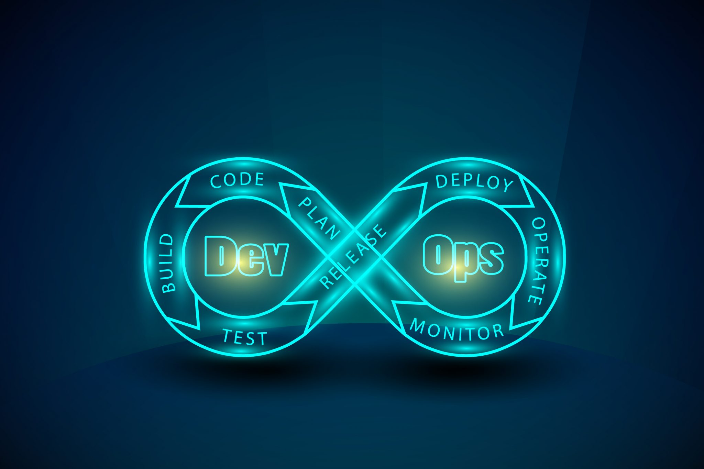
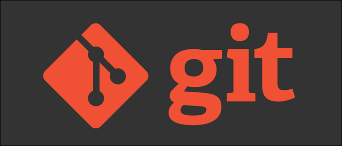
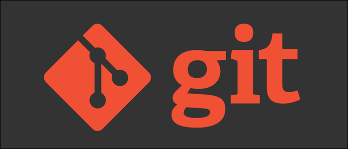

My First Project in Devops : Integrating multiple technologies
#devops #git #github #html #apachehttpdserver #RedhatLinux8 #OracleVM #Jenkins #ngrok #publictunnel #networking
Current Outcome :
Any change I make in my local Windows PC repository and commit, the changes could be automatically viewed from across the globe in 2 minutes.
(PS: web server is hosted in Redhat8 in VM, not in my local workspace)
1. In this project I created a local repository in my Windows PC using Git.
2. Using html code, I created a simple webpage (which you are viewing right now) in the local repository.
3. After that I uploaded the local repository to Github using git push.
4. I installed Redhat Linux8 inside Oracle Virtual Box
5. After that I hosted a http server using apache httpd in my Redhat Linux8 in my Oracle VM.
6. I pulled my github repository files in my RedhatLinux8 system, so that we can access the webpage I created using the http server.
7. I installed Jenkins and created a Jenkins job so that it will keep an eye on the github repository and once files are updated in github repository,
automatically job will run to pull the new files from github repository and changes are deployed.
8. I created a post-commit hook in my local repository (Windows-PC) so that once I commit in my local repository, push is done automatically to github repository.
9. Using ngrok, I created a tunnel to host my webpage publicly, so that anyone with internet could access my webpage.




 
